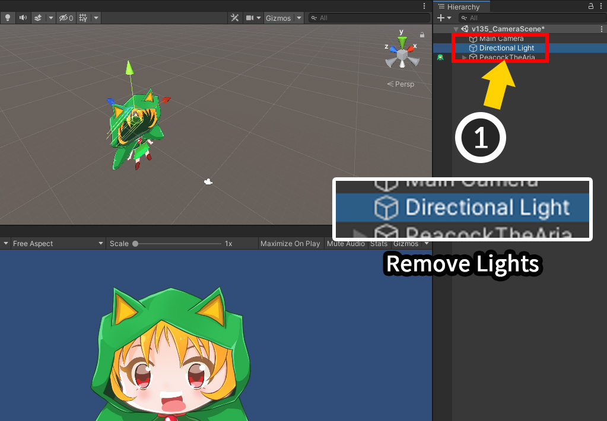
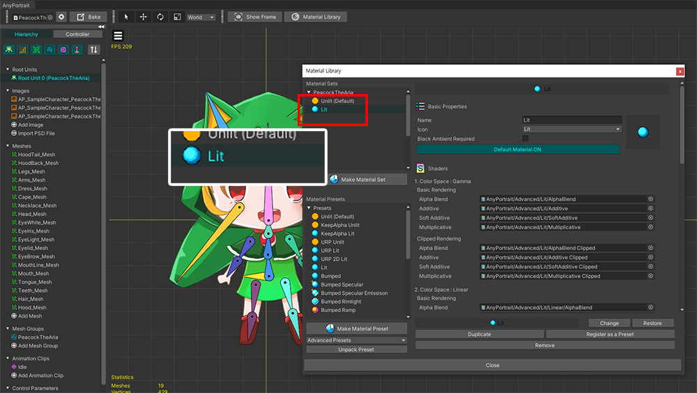

AnyPortrait > Manual > Lighting settings of the scene
Lighting settings of the scene
1.4.7
Characters created in AnyPortrait may appear too bright in the Unity scene.
This is because AnyPortrait's default material is affected by Ambient Color.
Conversely, there are situations where you need to set your characters to be affected by light.
This page provides a brief overview of how to set up lighting in your Unity scene.
Remove the light to show the original color
If you use the default material (Unlit), let's set it up so that the color of the image is rendered as it is.

This is the result in the Unity scene after Bake the character created with the AnyPortrait editor.
It is rendered slightly brighter than the original image.
Unity is a 3D game engine, so light is added by default when you first create a project and create a scene.
But here, the light settings make the colors in the image not appear normally.

Choose Window > Rendering > Lighting from the Unity menu.
(The location of the Lighting menu may vary by version of Unity.)

(1) Select the Environment tab.
(2) Change the value of Source of Environment Lighting to Color.
(3) Change Ambient Color to Black.
(4) Now you can see that the color of the image is expressed normally.

Directional Light is placed in Unity's default scene.
But in this case, we don't need the light.
(1) Remove the light objects placed in the scene including Directional Light.
Note
When using an Unlit material, the function that automatically changes Ambient Color to black works when Bake is performed.
For more information about this, please refer to the related page.
Default Unlit material changed
1.4.7
Thanks to "Unlit (v2)" added as a default material in AnyPortrait v1.4.7, you don't need to do the lighting initialization above.
(Related page)
Set up to be affected by light
Conversely, let's set the Lit material to lighten or darken depending on the light.

A Lit material or a Lit-like material is set using Material Library (Related page).

Without light, your character will be rendered dark in your Unity scene.
(1) Set Ambient Color in the Lighting settings described above to Non-black color.
(2) You can see that the color of the character changes according to the light.

(1) If you place light objects in the scene, (2) you can see the character render nicely depending on the light.
Note
If you use URP 2D, you need to use a different type of light.
For more information on this, please refer to the Related Page.